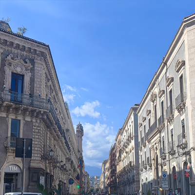

我曾因为参加学术会议在卡塔尼亚住过一段时间,这里给我的感觉是时间流逝的痕迹刻入了这里的空间信息里.
意大利西西里岛的东岸是很特别的存在,我所在的卡塔尼亚连同北边的陶尔米纳都是古希腊的城市,在来这之前我并不知道"古希腊"和今天的希腊的疆域有很大区别.后来这儿又称为古罗马的重镇,我到会场的路都会穿过一道城墙残墙,那就是古罗马残墙.而后就是漫长的中世纪,我们的会场也设定在一个被装修过的教堂侧厅,那便是那段时间的古建筑.接下来意大利迎来了文艺复兴,再往后就是工业革命和近现代,卡塔尼亚都有幸参与.可以说卡塔尼亚是少有的完整历经整个西方文明关键节点的城市.
因此卡塔尼亚有一种奇妙的时空感,我感觉到这里有一些建筑遗迹在散发着历史的味道,我看见的是空间,但是感受到的是时间维度的流逝和残存.卡塔尼亚教堂的钟上的铭文也让我感动:"我从我的灰烬里重生",卡塔尼亚是火山之城,曾因为地震和火山爆发被摧毁了十多次,但它依然屹立不倒.

卡塔尼亚街景.